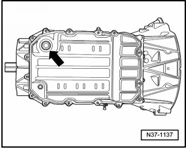
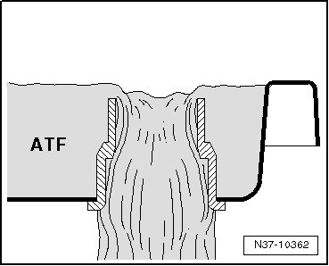
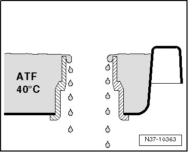
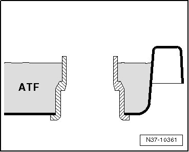

ATF Level Checking and Filling
ATF Level Checking and Filling
If the Automatic Transmission Fluid (ATF) circuit was opened, it must first be bled. Refer to --> [ ATF Circuit, Bleeding ] ATF Circuit, Bleeding.
Only then can the ATF level be checked and corrected. Refer to --> [ ATF Level Checking and Filling ] ATF Level Checking and Filling.
ATF is obtainable as a replacement part.
Container size 1.0 L - replacement part no. (G 055 025 A2).
Special tools, testers and auxiliary items required
• Drip tray (VAG 1306)
• Torque wrench (VAG 1331)
• Torque wrench (VAG 1332)
• ATF filler tool (VAG 1924)
• ATF filler tube (VAG 1924/1)
• Vehicle diagnostic, testing, and information system (VAS 5051)
• Diagnostic cable, 3m with power supply (VAS 5051/1) or Diagnostic cable, 5m without power supply (VAS 5051/3)
ATF Filler Tool (VAG 1924)
If an old ATF filling system (VAG 1924) is used, the width of the filling hooks must be decreased by about 20 mm. This is the only way possible to insert it into the ATF check hole. Deburr and clean the hook after cutting it.
• The large ATF filler plug is no longer used from 2004. On vehicles with the small M10 filler plug, the transmission is filled with the adapter for filling ATF oil (VAS 6262/2).
Short Description
The ATF level is specified by a permanently installed overflow tube in the oil pan.
The ATF level is checked when fluid is a specific temperature and with engine running. The ATF temperature is read out by the vehicle diagnosis, testing and information system (VAS 5051B). If the test temperature has been reached, the sealing plug in the oil pan is removed to check the ATF.
CAUTION!
An incorrect ATF stand affects the function of the transmission.
Test Prerequisites
• Transmission not in emergency running mode, ATF temperature not above 30 °C.
• Vehicle on a flat surface
• Selector level in the "P" position
• All electrical components and Air Conditioning (A/C) system must be switched off.
- Secure container of ATF filler tool (V.A.G 1924) to vehicle.
- Connect tester and move through selections until it is ready for operation. Refer to --> [ Tester, Connecting ] Tester, Connecting.
- Press right Guided Fault Finding.
- Then select vehicle, transmission and Check ATF Level.
- Press ->.
- Press brake.
- Start engine.
- Shift selector level into each position for at least 2 seconds. Then, place selector lever in the "P" position.
- Raise vehicle.
- Place appropriate receptacle underneath transmission.
At the test temperature of 35 °C.
- Remove locking bolt in oil pan to check ATF.

The large ATF filler plug is no longer used from 2004. On vehicles with the small M10 filler plug, the transmission is filled with the adapter for filling ATF oil (VAS 6262/2).
If the ATF level is too high, the excess ATF drains off.

- Allow ATF to drain until it drips.

- Install the ATF inspection plug with a new seal.
Tightening Specifications
• M10 bolt: 20 Nm
• M24 bolt: 70 Nm
If the ATF level is too low, only the ATF in the filler hole drains out after the sealing plug is removed.

- Wait approximately 30 seconds and if no more ATF drips out, top it off.
- Add ATF using ATF filler tool (VAG 1924) until ATF exits from the check hole.
Allow ATF to drain until it drips.
- Install the ATF inspection plug with a new seal.
Tightening Specifications
• M10 bolt: 20 Nm
• M24 bolt: 70 Nm
- The ATF check is now completed.
- Switch off engine.